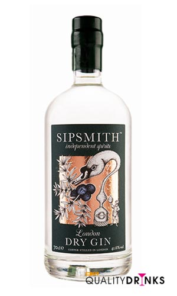

La ginebra Sipsmith es una ginebra London Dry Gin de un brillo y una pureza extraordinária. Es una ginebra compleja y aromática pero lo suficientemente suave para combinar en un Martini y para elaborar un gintonic rico y equilibrado.
Es una ginebra de aromas florales con notas suaves a enebro y cítricas. Su sabor seco a enebro conduce a unos sabores a tarta de limón y mermelada de naranja para acabar con un final ligeramente picante a enebro y limón agrio.
Es una ginebra que utiliza 10 ingredientes botánicos en su elaboración, todos cuidadosamente seleccionados de varias partes del mundo: bayas de enebro, semillas de cilantro, raíz de angélica, raíz de regaliz, raíz de lirio, almendra molida, corteza de casia, canela de Madagascar, cáscara de naranja y cáscara de limón.
La ginebra Sipsmith, es una ginebra que ha ganado varios premios internacionales.